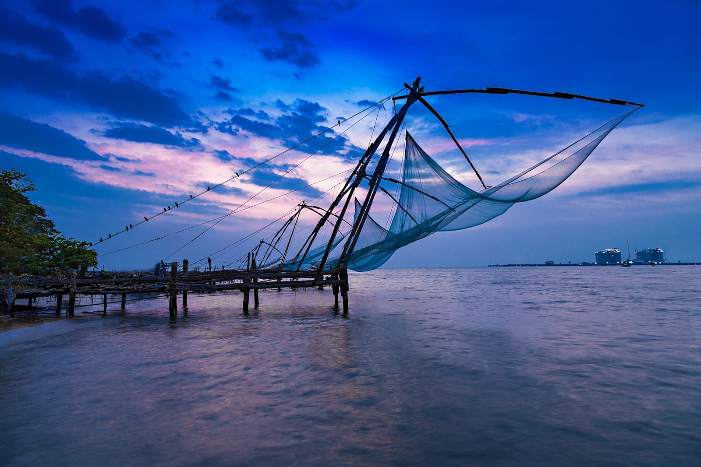

Thiruvananthapuram, formerly Trivandrum, city, is the capital of Kerala state, southwestern India.
Kollam
Kollam is known as a trade hub and for its beaches, like lively Kollam and secluded Thirumullavaram.
Pathanamthitta
The Hindu pilgrim centre Sabarimala is situated in the Pathanamthitta district, the town is known as the 'Pilgrim Capital of Kerala'.
Alappuzha
Alappuzha is a city on the Laccadive Sea in the southern Indian state of Kerala.
Kottayam
Kottayam is flanked by the Western Ghats on the east and the Vembanad Lake and paddy fields of Kuttanad on the west.
Idukki
Idukki district is a densely forested, mountainous region in the south Indian state of Kerala.

Ernakulam
Sprawling, residential Ernakulam is known for Marine Drive, a busy waterfront promenade where boats offer backwater cruises.
Thrissur
It's known for sacred sites and colorful festivals. In the center is Vadakkumnathan Temple, dedicated to Lord Shiva and adorned with murals.
Palakkad
The district is one of the main granaries of Kerala and its economy is primarily agricultural. The district is also the land of Palmyrahs.
Malappuram
Malappuram district has a rich and vibrant history.
The district was the site for many of the Mappila Revolts.
Kozhikode
It was a significant spice trade center and is close to Kappad Beach, where Portuguese explorer Vasco da Gama landed in 1498.
Wayanad
The Wayanad Wildlife Sanctuary is a lush, forested region with areas of high altitude, home to animals like Asiatic elephants, tigers, leopards and egrets.
Kannur
It was once an ancient trading port. The St. Angelo Fort, once occupied by European colonial forces, show the city’s significant role in the spice trade.
Kasaragod
Kasaragod town is located on the estuary where the Chandragiri River, which is also the longest river in the district.